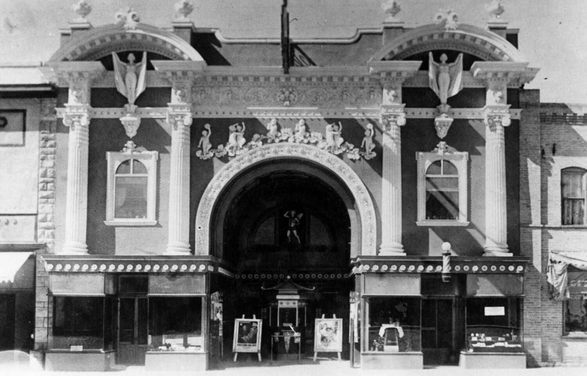

Gunnison, Utah
Chamber of Commerce
Chamber of Commerce
 Settled in spring 1859 by a group led by Bishop Jacob Hutchinson. It was directed and named by Brigham Young for Capt. John W. Gunnison, second in command of the Stansbury transcontinental railroad survey, who was killed by Paiutes near Sevier Lake, Oct. 26, 1853. It was also called Chalk Hill Point for the original site. A second group’s site near the San Pitch/Sevier River confluence farther west was colorfully called Hog’s Wallow as well as Kearn’s Camp for the bishop of this Springville group. During a fall visit in 1862 Young advised moving to the present site to escape the swampy conditions. Located on the lower San Pitch, there is less sense of slope and more plain than in other Sanpete towns. Agriculture and irrigation have produced sugar beets, peas, cabbage and celery, and turkeys in the past. Today small grains and alfalfa, beef cattle and dairy products are still the heart of the valley’s life. Find information here. There are many historical buildings that are still used today, like the theater, which is now a movie theater rather than a play theater. It has little quirks of a small town, but my favorite thing to look for is the Mater from cars around town it moves at times. I haven't seen it in a while.